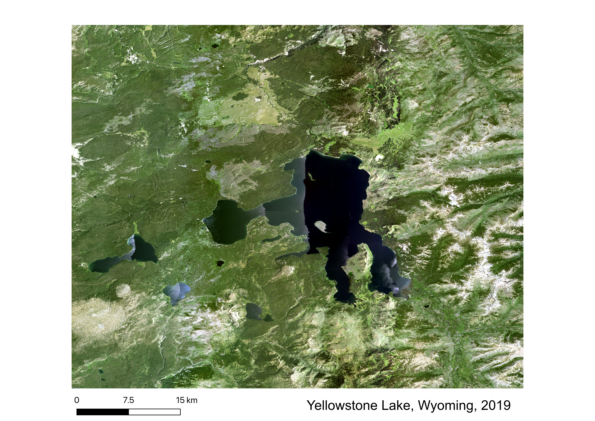
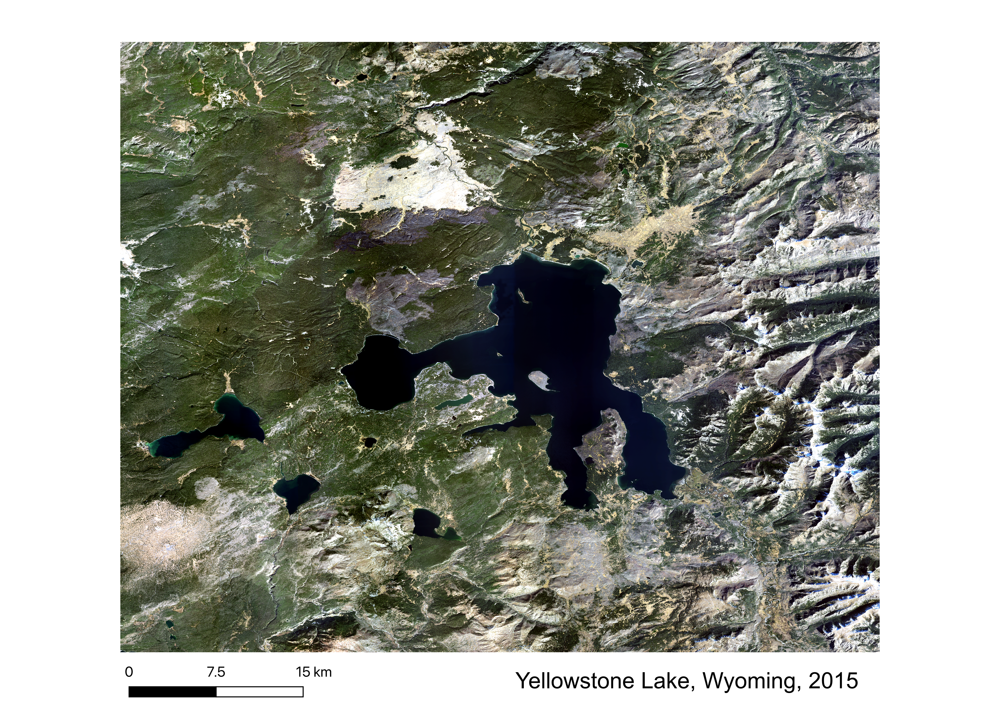
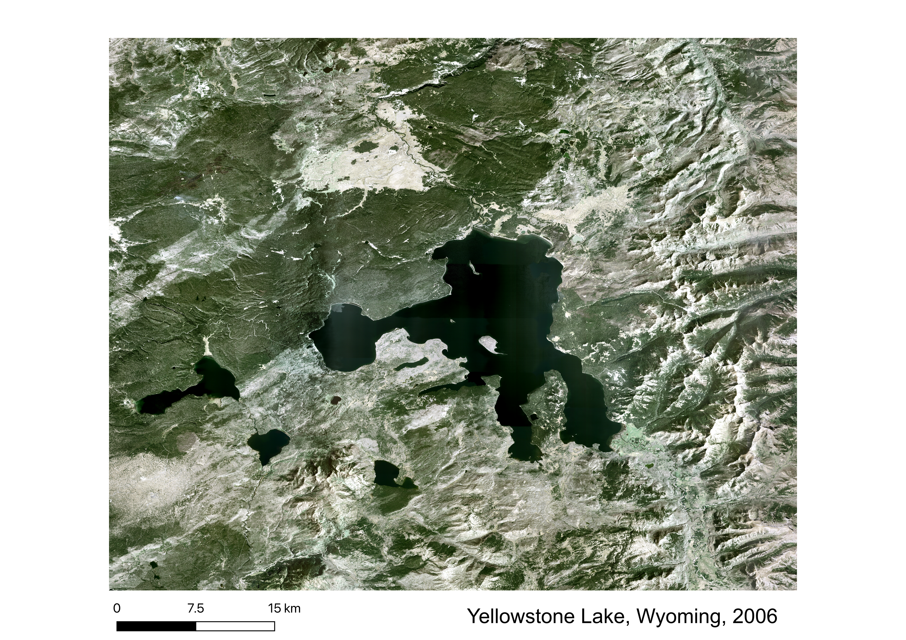

Yellowstone Lake, located in northwestern Wyoming, is the largest high elevation lake in North America. The lake is in the heart of Yellowstone National Park, one of the most visited attractions in the United States, and is constantly vulnerable to human interference despite being on protected land. I chose to visualize change in this area from 2006 to 2019, specifically to observe forest recovery periods following massive wildfires at the end of the 20th century. The 2006 image acts as a baseline, with the lake's shoreline vegetation relatively intact but burn scars are still prominent in the surrounding area. The 2015 image shows some forest regrowth, but multiple patches of brown or gray that were not previously there. Upon further investigation, I discovered that 2015 was among peak years for Mountain Pine Beetle infestations across the park, a species that greatly increases tree mortality. I speculate that these patches of brown or gray are likely areas that were impacted by the infestation and died or declined in abundance. Lastly, the 2019 image shows a large amount of vegetation growth, consistent with pine tree restoration efforts.


